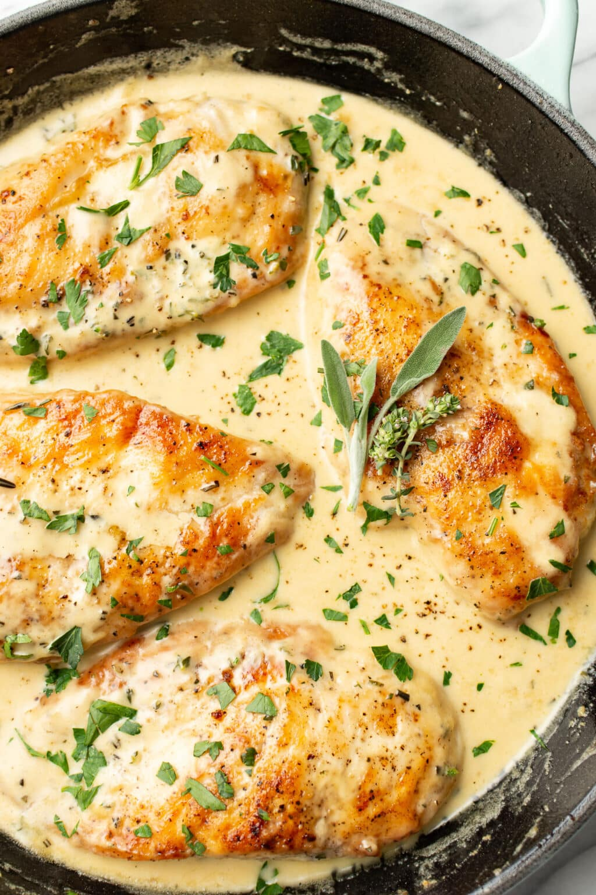

Creamy herb chicken

Description
This creamy herb chicken recipe has a rich yet fresh and bright cream sauce! It’s fast, easy, and uses everyday ingredients to make the ideal warmer weather dinner
Shout out to Natasha on Salt & Lavender
Ingredients
- Chicken
- Garlic powder
- Flour
- Olive oil and butter
- Poultry mix
- Heavy cream
- Dijon mustard
Instructions
- Cut the chicken into four thinner cutlets
- season them with salt,pepper and garlic powder
- Dredge in flour
- Pan fry until golden, add Dijon
- stir and let it reduce
- Stir in the cream and finely chopped fresh herbs
- Return the chicken to the pan, let it simmer until the chicken is fully cooked and the sauce thickens up a bit.
- Season with extra salt & pepper